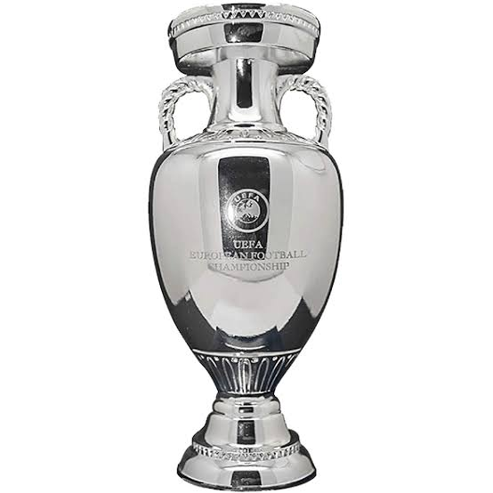
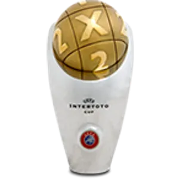
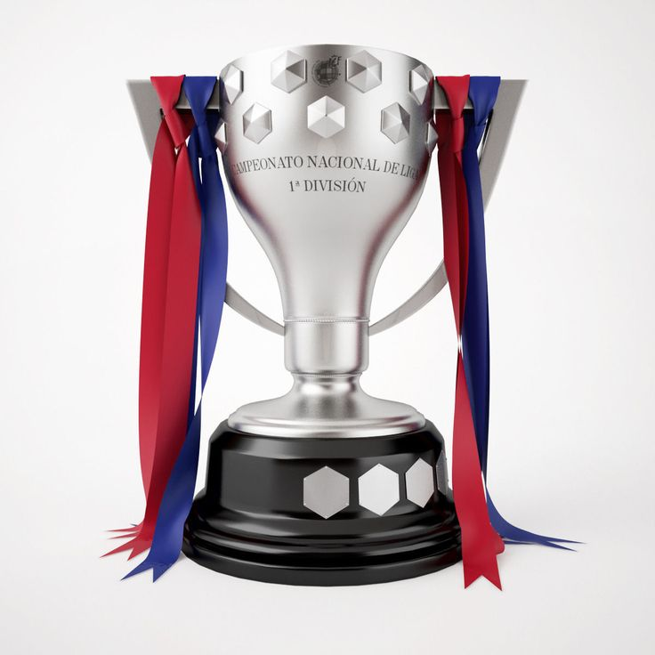
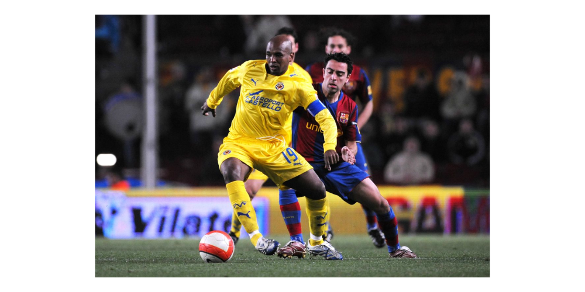

LaLiga: equipos y leyendas
Una página sobre los clubes y los jugadores que forman su historia.
LaLiga: equipos y leyendas
Una página sobre los clubes y los jugadores que forman su historia.
Leyenda del Villarreal CF




Marcos Senna da Silva, conocido como Marcos Senna, es un exfutbolista hispano-brasileño nacido en São Paulo el 17 de julio de 1976. Llegó al Villarreal en el verano de 2002, procedente del São Caetano, y defendió sus colores hasta 2013. Como mediocentro y capitán aportó equilibrio, fortaleza y una gran lectura del juego a una de las etapas más importantes del Submarino Amarillo.
Permaneció en el Villarreal tras el descenso de 2012 y ayudó a devolver al equipo a Primera División en 2013.
Sus primeras temporadas estuvieron condicionadas por dos graves lesiones de rodilla. Cuando consiguió continuidad, destacó como mediocentro: protegía la defensa, organizaba la salida del balón y también amenazaba la portería con sus disparos lejanos, faltas y penaltis. En sus once temporadas disputó 363 partidos oficiales y marcó 33 goles con el Villarreal. Su crecimiento coincidió con la expansión europea del equipo, que conquistó las Copas Intertoto de 2003 y 2004 y alcanzó las semifinales de la Liga de Campeones en 2006.
En la temporada 2007/08 ayudó al Villarreal a conseguir el subcampeonato de Liga. Ese mismo verano ganó la Eurocopa con España, selección con la que disputó 28 encuentros y anotó un gol. Su compromiso con el club quedó reflejado después del descenso de 2012: permaneció en el equipo y participó en el regreso a Primera División al año siguiente. Tras esa última campaña amarilla continuó su carrera en el New York Cosmos, dejando en Vila-real el recuerdo de un capitán decisivo dentro y fuera del campo.